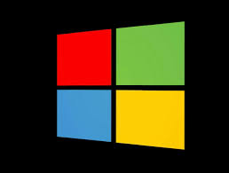

Explore and compare the design and functionality of different operating systems. Click on an OS below to delve into its unique features and interface design.
Minimalist design, intuitive interface.

Versatile, widely compatible.
Open-source, highly customizable.